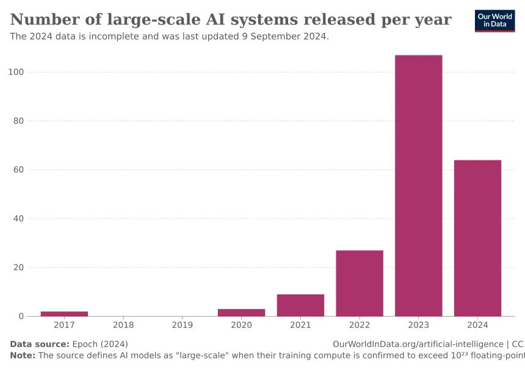

The Rise of AI Regulations” deals with the growing efforts by governments and regulatory bodies around the world to implement rules and laws governing the development and use of artificial intelligence (AI). As AI technologies become more widespread and integrated into everyday life, there are increasing concerns about their ethical, societal, and legal implications. Here’s more information about this critical topic: 1. Why AI Regulations Are Important AI technologies, such as machine learning algorithms, neural networks, and large language models, have the power to revolutionize industries. From healthcare to finance, AI can boost efficiency, create new opportunities, and solve complex problems. However, AI also presents significant challenges, such as:  Ethical Issues: AI can sometimes make biased or harmful decisions, such as those affecting hiring, criminal justice, or healthcare. Privacy Concerns: AI-driven data collection and surveillance systems can infringe on individual privacy rights. Job Displacement: Automation through AI could replace jobs, especially in manufacturing and administrative roles. Security Risks: AI can be misused for malicious purposes, like cyberattacks or creating deepfakes. Governments are focusing on ensuring that AI systems are safe, fair, transparent, and accountable. 2. Key AI Regulations Around the World Various countries and regions are leading the way in AI regulation: European Union (EU) The EU is taking a proactive stance with its Artificial Intelligence Act (AI Act), which aims to regulate AI technologies across its member states. Key points include: Risk-based Approach: The Act classifies AI applications into different risk categories: minimal, limited, high, and unacceptable. High-Risk AI Systems: AI used in critical areas, such as healthcare, law enforcement, and hiring, will require stringent oversight. Transparency: Users must be informed when interacting with AI systems, especially if these systems create deepfakes or automated decision-making. The EU’s AI Act aims to set global standards and ensure that AI technologies align with fundamental rights and ethical guidelines. United States In the U.S., there is no comprehensive AI law, but there are several initiatives focused on regulating specific aspects of AI: Blueprint for an AI Bill of Rights: In 2022, the White House issued a framework outlining five principles for protecting Americans in the AI age. These include protections against algorithmic discrimination, ensuring data privacy, and providing transparency. Federal and State Level: Various government agencies, like the Federal Trade Commission (FTC), are involved in drafting rules on AI ethics and privacy. California, for instance, has strong privacy laws (e.g., the California Consumer Privacy Act) that affect AI use in data collection. China China is aggressively advancing its AI technology, but the government is also taking steps to regulate its use: AI Ethics Guidelines: China has published its AI ethics guidelines, which emphasize social responsibility, data security, and promoting the country’s strategic goals. Surveillance and Control: China is leading in AI surveillance systems, raising concerns about privacy violations and government overreach. Its regulatory framework often prioritizes control and monitoring over individual rights. 3. Industry Reactions Tech companies have welcomed regulation but call for a balanced approach that promotes innovation while ensuring safety. Key industry voices, such as Google, Microsoft, and OpenAI, have advocated for: Clear Guidelines: Companies want well-defined regulations so they can invest and innovate without the fear of uncertain legal outcomes. Global Cooperation: Since AI is a global technology, companies argue that regulations should harmonize across borders to avoid fragmentation. Ethical AI Development: Companies are investing in responsible AI practices, such as bias detection, transparency, and data privacy. 4. Public Concerns As AI becomes more prevalent, the general public has raised concerns, particularly regarding: Data Privacy: AI systems often collect and analyze vast amounts of personal data, leading to fears of data breaches and loss of privacy. Bias and Discrimination: Algorithms, especially in hiring, law enforcement, and finance, have been shown to sometimes reinforce social biases, leading to unfair outcomes for minorities and other vulnerable groups. Job Loss: While AI promises new opportunities, there are real concerns about automation displacing workers, especially in sectors like retail, logistics, and manufacturing. 5. Future Outlook Stronger Regulations Expected: As AI continues to advance, especially in areas like autonomous driving, healthcare, and finance, expect more regulations to emerge globally. AI Ethics and Guidelines: The demand for ethical AI systems is growing, and companies are expected to follow best practices for transparency, fairness, and accountability. Cross-Border Challenges: With AI being a global technology, cooperation between countries will be crucial to ensure that regulations align, while also addressing issues like intellectual property, competition, and security.